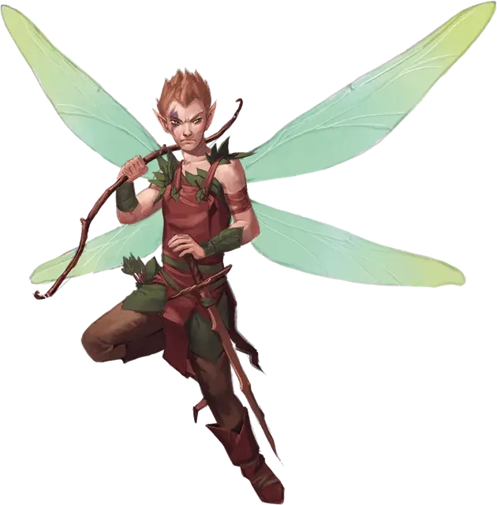

Спрайт
Sprite
Крошечная Фея (Фея), нейтрально-добрая

Класс Доспеха 15 (кожаный доспех)
Хиты 2 (1к4)
Скорость 10 футов, летая 40 футов
| мод | спас | ||
|---|---|---|---|
| СИЛ | 3 | −4 | −4 |
| ЛОВ | 18 | +4 | +4 |
| ТЕЛ | 10 | +0 | +0 |
| мод | спас | ||
|---|---|---|---|
| ИНТ | 14 | +2 | +2 |
| МДР | 13 | +1 | +1 |
| ХАР | 11 | +0 | +0 |
Навыки Восприятие +3, Скрытность +8
Чувства пассивное Восприятие 13
Языки Общий, Сильван, Эльфийский
Опасность 1/4 (50 опыта)
Бонус мастерства +2
Среда обитания Лес
Действия
Длинный меч. Рукопашная атака оружием: +2 к попаданию, досягаемость 5 футов, одна цель. Попадание: Рубящий урон 1.
Короткий лук. Дальнобойная атака оружием: +6 к попаданию, дистанция 40/160 футов, одна цель. Попадание: Колющий урон 1, и цель должна преуспеть в спасброске Телосложения Сл 10, иначе станет отравленной на 1 минуту. Если результат спасброска не превышает 5, отравленная цель теряет сознание на период отравления, или пока не получит урон, или пока другое существо не разбудит её действием.
Рассматривание сердца. Спрайт касается существа и магическим образом узнает его текущее эмоциональное состояние. Если цель провалит спасбросок Харизмы Сл 10, спрайт также узнает мировоззрение существа. Исчадия, Небожители и Нежить автоматически проваливают этот спасбросок.
Невидимость. Спрайт магическим образом становится невидимым, пока не атакует, не наложит заклинание, или пока не прервет концентрацию (как при концентрации на заклинании). Все снаряжение, которое спрайт несет или носит, становится невидимым вместе с ним.
Описание
«В ВЕТВЯХ ДЕРЕВА МОЖНО БЫЛО УВИДЕТЬ КРОШЕЧНУЮ ДЕРЕВНЮ, КЛЯНУСЬ ВАМ! СЛЕДУЮЩЕЕ, ЧТО Я ПОМНЮ, ЭТО ТО, КАК Я ЛЕЖУ ЛИЦОМ В ГРЯЗИ. ГОЛОВА КРУЖИЛАСЬ, А КОГДА Я ПОДНЯЛСЯ И ОГЛЯДЕЛСЯ, НА ЭТОМ ДЕРЕВЕ УЖЕ НЕ БЫЛО ДЕРЕВНИ».
— РАССКАЗ ПОЛУОРКА СЛЕДОПЫТА
В потаенных рощах и тенистых оврагах можно услышать стрекот крылышек крошечных спрайтов. При всей их внешней красоте и блеске, спрайтам не хватает тепла и сострадания. Это агрессивные и суровые воители, способные пойти на жесткие меры против незнакомцев, посягнувших на их дом. Чужаки, рискнувшие подойти к их владениям, чаще всего либо отпугиваются, либо усыпляются.
Защитники леса. Спрайты строят свои небольшие деревни на ветвях деревьев и согласных трентов, а также на полянах, где полно зелени, цветов, мха и поганок. Дикие по натуре спрайты не любят чужаков. Когда чужаки попадаются им на глаза, спрайты предпочитают напугать гостей странными звуками и шевелением кустов. Если кто-то достаточно глуп, чтобы пройти дальше в их владения, ему будет грозить отравленная стрела и долгий сон. Пока гость отдыхает на травяной перине, спрайты перебираются в более безопасное место.
Познающие сердца. Спрайты могут почувствовать добро и зло в существе лишь по биению его сердца. Прислушавшись к сердцебиению, спрайты могут сказать, взволновано ли это существо от переполнивших его прекрасных чувств или же оно бежит от всепоглощающего ужаса. Они также могут сказать, скрывает ли существо внутри себя ненависть или жадность. Способность спрайтов читать чужие сердца непогрешима, потому что сердце не может врать.
Изготовители ядов. В своих лесных владениях спрайты изготавливают токсины, целебные мази, антидоты и яды, включая сонный яд, которым они смазывают свои стрелы. Они уходят далеко в лес, чтобы собрать редкие цветы, мох и грибы. Порой они заходят в опасные земли, чтобы добыть редкие ингредиенты. Находясь на пороге отчаянья, спрайты могут даже забраться на территорию, принадлежащую каргам, и украсть необходимое.
Добродушие. Из-за того, что спрайты могут читать чужие сердца и благосклонно относятся к добрым существам, они борются с силами злых фей и всячески срывают планы злых архифей. Если кто-то из путешественников появится в их лесу и расскажет, что пришел бороться со злыми феями или гоблинами, спрайты сразу же окажут им поддержку и даже могут прийти на помощь, когда искатели приключений этого меньше всего ждут.
В отличие от пикси, спрайты редко предаются легкомыслию и веселью. Они — истинные воители, защитники и судьи, из-за чего другие виды фей считают их чрезмерно суровыми и излишне серьезными. Однако феи, уважающие территорию сородичей, могут найти в них надежных союзников в тяжелые времена.